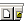
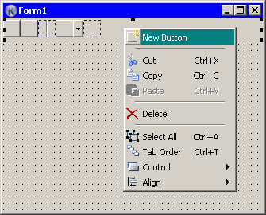

|  | TAToolbar |
Creates an Toolbar control on the form.
| Properties: | |
| Images | An attached ImageList control. |
| Name | Unique name of control, this defines the name of variable where control handle will be kept. |
|
After placing Toolbar control on the design form, you have to create one or more tool buttons. To do that, click with right mouse button on Toolbar control, then click on the “Add Button” item. A new page will be added. When working with control, note the difference between whole toolbar selection and current button selection. To delete a button first click on the button and then select “Delete” from context menu or just press Del key on the keyboard. |
 |
Each button has its own properties:
| Individual ToolButton Properties: | |
| Left | Position of button from the left side of toolbar. |
| Name | Unique name of control, this defines the name of variable where control handle will be kept. |
| Style | Style of toolbutton. This can be one of following values: tbsButton - regular toolbutton tbsCheck - checkbutton tbsDropdown - button with dropdown menu tbsSeparator - separator (empty space) between buttons. All those styles (in order) are shown on the screenshot above. |
None.